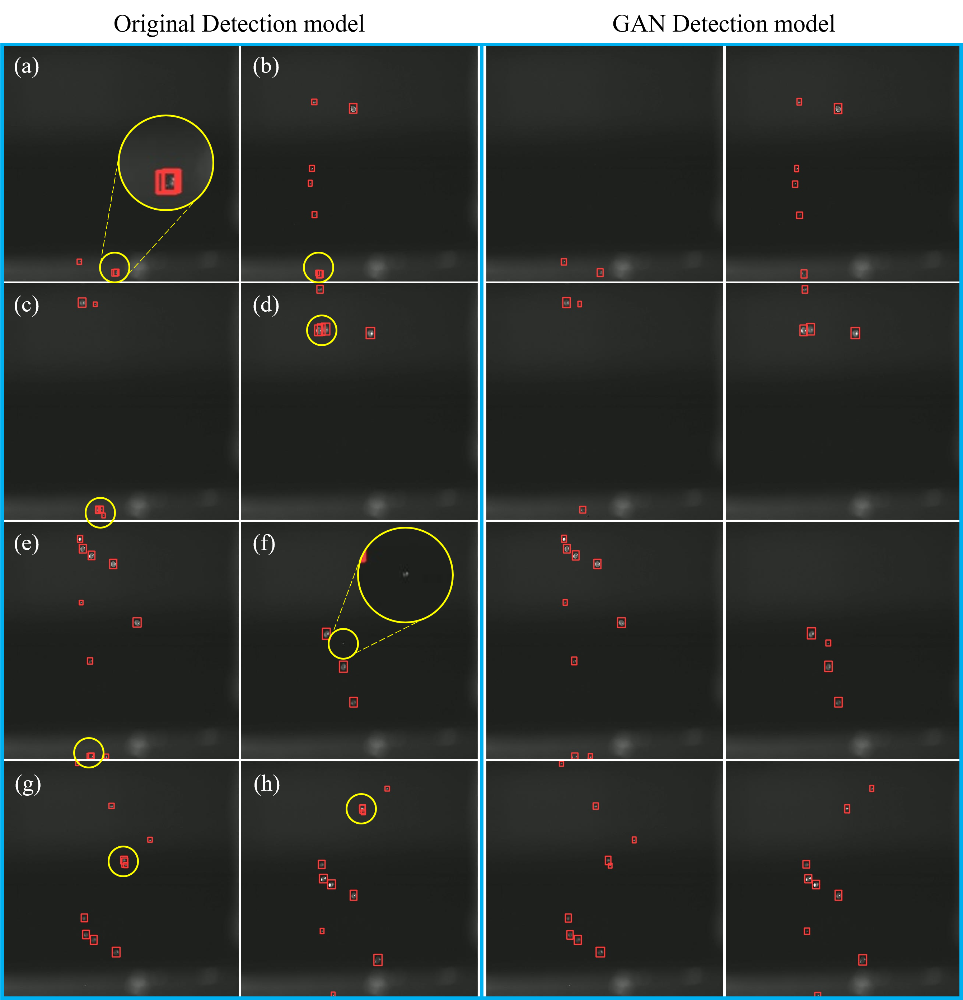

Research Interests
Over the past few years, I have explored a diverse range of topics in robotics and artificial intelligence. My research began with designing robotic systems and intelligent control algorithms, later expanding into deep learning applications. Initially, I focused on enabling autonomous systems to interact safely and adaptively with their environments using reinforcement learning and control strategies. This work evolved into leveraging AI to tackle real-world challenges, particularly in robotics for daily life and AI-driven decision-making systems.
Recently, my research has shifted toward medical AI, including reasoning-based disease diagnosis, 3D/4D medical image analysis, and video understanding via vision-language models. I am especially interested in how these models can interpret complex spatiotemporal data to provide explainable insights from medical images and videos. My overarching goal is to develop intelligent systems that enhance human well-being by integrating perception, reasoning, and action.
Research Projects
| ⚡Missing Data Estimation for MR Spectroscopic Imaging via Mask-Free Deep Learning Methods
|
|
Magnetic Resonance Spectroscopic Imaging (MRSI) is a powerful tool for non-invasive mapping of brain metabolites, providing critical insights into neurological conditions. However, its utility is often limited by missing or corrupted data due to motion artifacts, magnetic field inhomogeneities, or failed spectral fitting-especially in high resolution 3D acquisitions. To address this, we propose the first deep learning-based, mask-free framework for estimating missing data in MRSI metabolic maps. Unlike conventional restoration methods that rely on explicit masks to identify missing regions, our approach implicitly detects and estimates these areas using contextual spatial features through 2D and 3D U-Net architectures. We also introduce a progressive training strategy to enhance robustness under varying levels of data degradation. Our method is evaluated on both simulated and real patient datasets and consistently outperforms traditional interpolation techniques such as cubic and linear interpolation. The 2D model achieves an MSE of 0.002 and an SSIM of 0.97 with 20% missing voxels, while the 3D model reaches an MSE of 0.001 and an SSIM of 0.98 with 15% missing voxels. Qualitative results show improved fidelity in estimating missing data, particularly in metabolically heterogeneous regions and ventricular regions. Importantly, our model generalizes well to real-world datasets without requiring retraining or mask input. These findings demonstrate the effectiveness and broad applicability of mask-free deep learning for MRSI restoration, with strong potential for clinical and research integration.
|
MRSI missing voxel estimation.
|
| ⚡RARL: Improving Medical VLM Reasoning and Generalization with Reinforcement Learning and LoRA under Data and Hardware Constraints
|
|
We propose a Reasoning-Aware Reinforcement Learning framework, RARL, that enhances the reasoning capabilities of medical VLMs while remaining efficient and adaptable to low-resource environments. Our approach fine-tunes a lightweight base model, Qwen2-VL-2B-Instruct, using Low-Rank Adaptation and custom reward functions that jointly consider diagnostic accuracy and reasoning quality. Training is performed on a single NVIDIA A100-PCIE-40GB GPU, demonstrating the feasibility of deploying such models in constrained environments. We evaluate the model using an LLM-as-judge framework that scores both correctness and explanation quality. Experimental results show that RARL significantly improves VLM performance in medical image analysis and clinical reasoning, outperforming supervised fine-tuning on reasoning-focused tasks by approximately 7.78%, while requiring fewer computational resources. Additionally, we demonstrate the generalization capabilities of our approach on unseen datasets, achieving around 27% improved performance compared to supervised fine-tuning and about 4% over traditional RL fine-tuning. Our experiments also illustrate that diversity prompting during training and reasoning prompting during inference are crucial for enhancing VLM performance. Our findings highlight the potential of reasoning-guided learning and reasoning prompting to steer medical VLMs toward more transparent, accurate, and resource-efficient clinical decision-making.
|
Model prediction and reasoning.
|
| ⚡IQBench: How" Smart''Are Vision-Language Models? A Study with Human IQ Tests
|
|
Although large Vision-Language Models (VLMs) have demonstrated remarkable performance in a wide range of multimodal tasks, their true reasoning capabilities on human IQ tests remain underexplored. To advance research on the fluid intelligence of VLMs, we introduce IQBench, a new benchmark designed to evaluate VLMs on standardized visual IQ tests. We focus on evaluating the reasoning capabilities of VLMs, which we argue are more important than the accuracy of the final prediction. Our benchmark is visually centric, minimizing the dependence on unnecessary textual content, thus encouraging models to derive answers primarily from image-based information rather than learned textual knowledge. To this end, we manually collected and annotated 500 visual IQ questions to prevent unintentional data leakage during training. Unlike prior work that focuses primarily on the accuracy of the final answer, we evaluate the reasoning ability of the models by assessing their explanations and the patterns used to solve each problem, along with the accuracy of the final prediction and human evaluation. Our experiments show that there are substantial performance disparities between tasks, with models such as `o4-mini`, `gemini-2.5-flash`, and `claude-3.7-sonnet` achieving the highest average accuracies of 0.615, 0.578, and 0.548, respectively. However, all models struggle with 3D spatial and anagram reasoning tasks, highlighting significant limitations in current VLMs' general reasoning abilities. In terms of reasoning scores, `o4-mini`, `gemini-2.5-flash`, and `claude-3.7-sonnet` achieved top averages of 0.696, 0.586, and 0.516, respectively. These results highlight inconsistencies between the reasoning processes of the models and their final answers, emphasizing the importance of evaluating the accuracy of the reasoning in addition to the final predictions.
|

IQ Test for VLMs.
|
| ⚡SilVar-Med: A Speech-Driven Visual Language Model for Explainable Abnormality Detection in Medical Imaging |
|
We introduce an end-to-end speech-driven medical VLM, SilVar-Med, a multimodal medical image assistant that integrates speech interaction with VLMs, pioneering the task of voice-based communication for medical image analysis. In addition, we focus on the interpretation of the reasoning behind each prediction of medical abnormalities with a proposed reasoning dataset. Through extensive experiments, we demonstrate a proof-of-concept study for reasoning-driven medical image interpretation with end-to-end speech interaction. We believe this work will advance the field of medical AI by fostering more transparent, interactive, and clinically viable diagnostic support systems.
|
Speech-Driven Visual Language Model for Explainable Abnormality Detection in Medical Imaging.
|
| ⚡Deep-Learning Framework for Optimal Selection of Soil Sampling Sites |
|
This study addresses the challenge of selecting optimal soil sampling locations within agricultural fields by leveraging deep learning techniques. In this project, we utilize data from local farms, incorporating features such as aspect, flow accumulation, slope, NDVI, and yield for training. We propose two methods: one employing a convolutional neural network (CNN) and another based on a deep learning framework utilizing transformers and self-attention. Our framework achieves impressive results on the testing dataset, outperforming the CNN-based method significantly. This work not only introduces a novel approach to soil sampling but also lays the groundwork for applying data science and machine learning to other agricultural challenges.
|

Pipeline of the soil sampling site selection tool using deep learning.

Self-attention mechanism.
|
| ⚡Adaptive Compensation for Robotic Joint Failures Using Partially Observable Reinforcement Learning |
|
In this study, we address the challenge of enabling a robotic manipulator to complete tasks despite joint malfunctions.
Specifically, we develop a reinforcement learning (RL) framework to adaptively compensate for a non-functional joint during task execution.
Our experimental platform is the Franka robot with 7 degrees of freedom (DOFs).
We formulate the problem as a partially observable RL scenario, where the robot is trained under various joint failure conditions and tested in both seen and unseen scenarios.
We consider scenarios where a joint is permanently broken and where it functions intermittently.
Additionally, we demonstrate the effectiveness of our approach by comparing it with traditional inverse kinematics-based control methods.
The results show that the RL algorithm enables the robot to successfully complete tasks even with joint failures, achieving a high success rate with an average rate of 93.6%.
This showcases its robustness and adaptability. Our findings highlight the potential of RL to enhance the resilience and reliability of robotic systems, making them better suited for unpredictable environments.
All related codes and models are published online.
|

Robot successfully opens a cabinet.

Robot operating normally.
|
| ⚡
seUNet-Trans: A Simple Yet Effective UNet-Transformer Model for Medical Image Segmentation |
|
In this project, we address the increasing importance of automated medical image segmentation in clinical practice, driven by the need for precise diagnosis and personalized treatment plans, alongside advancements in machine learning, notably deep learning.
While CNNs have been dominant, Transformer-based models are gaining recognition for computer vision tasks.
In this study, we propose a hybrid model, seUNet-Trans, combining UNet and Transformer architectures for medical image segmentation.
In their approach, UNet serves as a feature extractor, followed by a bridge layer connecting UNet and Transformer sequentially.
They employ pixel-level embedding without position embedding vectors to enhance efficiency and integrate spatial-reduction attention in the Transformer to reduce computational complexity.
Extensive experimentation on seven medical image segmentation datasets, including polyp segmentation, demonstrates the superiority of our proposed seUNet-Trans network over several state-of-the-art models.
|

Architecture of seUNet-Trans.
|
| ⚡
Enhanced Droplet Analysis Using Generative Adversarial Networks |
|
In this project, we explore the significance of precision devices in agriculture and the role of deep learning in enhancing their performance, specifically focusing on spray systems.
Due to the limitations of collecting sufficient training data, the study proposes using generative adversarial networks (GANs) to create artificial images of droplets.
By training the GAN model with a small dataset from high-speed cameras, it generates high-resolution images effectively.
Leveraging these synthetic images, we proposed a droplet detection model that outperforms traditional methods, achieving a notable increase in mean average precision (mAP).
This approach represents a pioneering use of generative models for augmenting droplet detection and contributes to addressing data scarcity challenges in precision agriculture, ultimately promoting efficient and sustainable agricultural practices.
|

Experimental setup for droplet generation.

Droplet detection results.
|
| ⚡CNN-Transformer Model for 3D Brain Tumor Segmentation |
|
In this paper, we introduce a novel methodology that combines convolutional neural networks (CNNs) and transformers to improve the accuracy of segmenting brain tumors in three-dimensional (3D) volumes.
Our hybrid architecture utilizes CNNs for initial volume predictions and then transforms them into sequence-to-sequence segmentation predictions using transformers, aiming to enhance both accuracy and robustness while capturing global contextual information.
The model is validated on a dataset from Harvard Medical School and Brats datasets, demonstrating effective segmentation of 3D brain tumors.
We propose a promising avenue for advancing 3D brain tumor segmentation, contributing to the field of medical image analysis research.
The source code is available on GitHub for further exploration.
|

Visualization of a brain volume with Flair and tumor using FreeView.
|
| ⚡
Robotic Flying Fish: Design, Fabrication, and Dynamics |
|
In this work, we developed a robotic flying fish, KUFish, capable of fast swimming and leaping out of water, mimicking natural flying fish.
The robot's thrust is naturally generated by a tail-beating mechanism driven by a DC motor and various linkages, achieving dynamic stability through symmetric mass distribution, positive buoyancy, and a lower center of gravity.
Experimental results showed KUFish swimming 0.68 m at 1.35 m/s and leaping out of water in 0.68 s.
In addition, we also developed a dynamic model to predict its swimming behavior, with findings indicating potential for future flying-fish-like robots.
|

Snapshots of KUFish leaping from water.
Dynamics of the robotic flying fish.
|
|